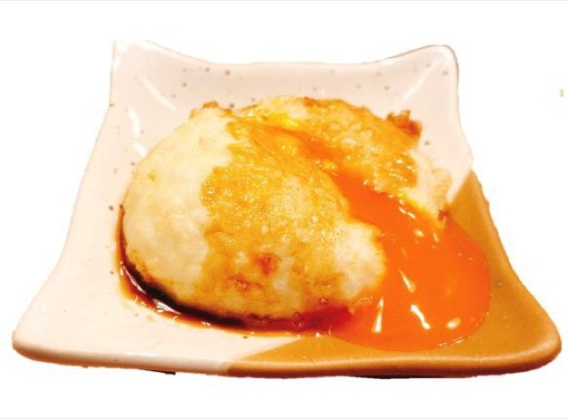
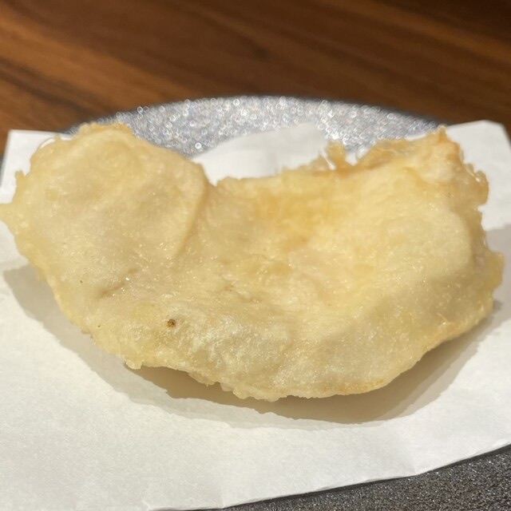
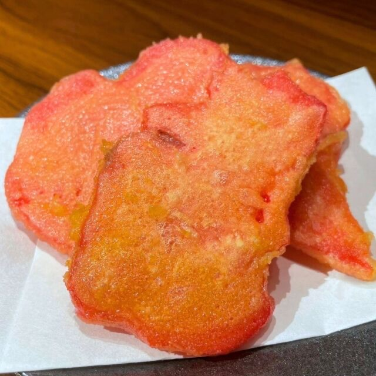
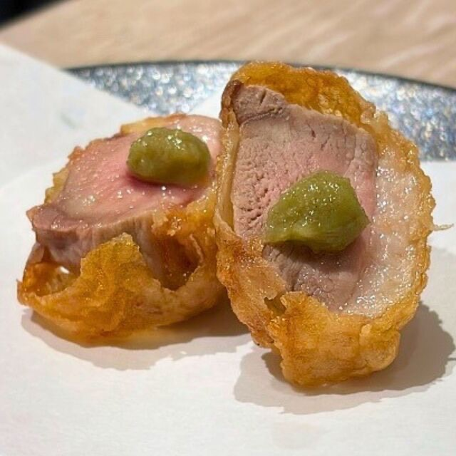
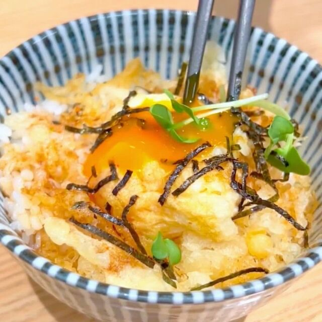

가을의 대표 메뉴. 향긋한 마이타케를 바삭하게 튀겼습니다. 소금이나 덴츠유와 함께 맛있게 즐기실 수 있습니다! [레드] 피노 누아와 잘 어울립니다!

튀겨서 단맛이 더해진 무화과에 고르곤졸라 치즈가 녹아듭니다. 발사믹 소스와 함께, 그대로 즐겨보세요! [레드] 마스캇 베일리A와 잘 어울립니다!

세 가지 신선한 생선을 즐길 수 있는 풍성한 모둠입니다.
[화이트] 고슈와 잘 어울려요!


기름진 가을 가다랑어를 고소하게 구워냈습니다. 약간의 고명을 듬뿍 올려 드세요! [화이트] 고슈와 잘 어울립니다!

도미의 고급스러운 단맛에 다시마의 감칠맛을 더했습니다. 먼저 그대로 맛보세요!
[화이트] 고슈와 잘 어울려요!

전채를 조금씩 맛볼 수 있는 작은 그릇 모둠입니다. 좋아하는 술과 함께 즐겨보세요!


고기의 풍미를 제대로 느낄 수 있는 자랑의 로스트비프입니다. [레드] 피노 누아와 잘 어울립니다!

머스캣의 단맛, 생햄의 짭짤함, 치즈의 깊은 맛이 어우러집니다. 스파클링 와인과 잘 어울립니다!

아삭아삭한 나가이모에 와사비의 향이 더해집니다. 덴푸라 사이에 입가심으로 즐겨보세요!

부드럽고 달콤한 맛의 자가제 포테이토 샐러드. 입가심이나 안주로도 좋습니다!

진한 슈토의 감칠맛을 크림치즈가 부드럽게 감싸줍니다. 좋아하는 술과 함께 즐겨보세요!

(※사진은 이미지입니다) 고민된다면 이 메뉴! 그날의 추천 덴푸라 5종을 비교하며 즐겨보세요. 덴푸라에는 스파클링 와인이 잘 어울립니다!

제철 덴푸라와 인기 덴푸라, 계절별 일품요리를 즐기실 수 있습니다!
사시미・전채, 덴푸라 9종과 입가심, 식사와 디저트까지 총 14가지가 포함된 알찬 코스입니다.


오시오의 대표 메뉴! 톡톡 터지는 이쿠라의 진한 감칠맛과 김 튀김의 식감을 즐기실 수 있습니다. 스파클링 와인과 환상 궁합

인기 메뉴 중 하나. 네기토로와 단무지의 아삭한 식감이 최고의 조화를 이룹니다. 스파클링 와인과 환상 궁합

포슬포슬한 대구 덴푸라에 진한 타르타르 소스가 최고의 조합입니다. 타르타르 소스를 듬뿍 찍어 드세요! 상쾌한 허브 향의 [화이트] 소비뇽 블랑과도 잘 어울립니다!

정석 메뉴! 탱글탱글한 식감과 갓 튀긴 고소함을 즐겨보세요. 모시오(해초 소금)와 함께! 로제 스파클링과 환상 궁합

진한 명란의 감칠맛을 튀김옷으로 감쌌습니다. 그대로 즐겨보세요! [화이트] 리슬링과 잘 어울립니다!

신선한 마다이에 레몬필의 상큼한 향이 완벽하게 어울립니다. 그대로 드셔도 좋고, 로제 스파클링 와인과 함께 즐겨보세요!

쫄깃한 식감과 부드러운 단맛. 소금이나 덴츠유와 함께! [화이트] 비오니에와 잘 어울립니다!

도톰한 아나고 살과 고급스러운 지방의 감칠맛을 즐기세요. 모시오(소금)나 덴츠유(튀김장)에 찍어 드시면 좋습니다!
[레드] 마스캇 베일리A와 잘 어울려요!
※사진은 2개 분량입니다.

약한 불에서 2시간 천천히 튀겨 고구마의 단맛을 가득 담았습니다.
[레드] 카베르네 소비뇽과 잘 어울려요!

제철을 맞은 표고버섯의 깊은 맛에 고기된장의 풍미를 더한 덴푸라입니다. 그대로 드셔도 좋습니다!
[레드] 카베르네 소비뇽과 잘 어울립니다!

아삭아삭한 식감과 고소함이 매력적입니다. 소금이나 덴츠유와 함께 드세요!
[레드] 카베르네 소비뇽과 잘 어울려요!

대인기 메뉴! 아스파라거스에는 파르미자노 치즈가 딱 어울립니다. 뜨거울 때 바로 드세요!
[화이트] 소비뇽 블랑과 잘 어울려요!

갓 튀긴 가지와 프로슈토의 짭짤함이 완벽하게 어울립니다. 뜨거울 때 바로 드세요!
[레드] 피노 누아와 잘 어울려요!

부드럽게 튀겨진 아보카도와 와사비 마요네즈가 최고의 조합입니다. 소스와 함께 즐겨보세요!
[화이트] 샤르도네와 잘 어울려요!

튀겨서 단맛을 끌어낸 양파와 부드러운 식감이 일품입니다. 소금이나 덴츠유와 함께 드세요!
[레드] 카베르네 소비뇽과 잘 어울려요!

튀김옷 속에서 반숙 노른자가 부드럽게 녹아내립니다. 덴츠유에 찍어 뜨거울 때 드세요!
[화이트] 샤르도네와 잘 어울려요!

육즙 가득한 닭고기를 고소한 튀김옷으로 감쌌습니다. 덴츠유에 찍어 뜨거울 때 드세요!
[레드] 피노 누아와 잘 어울려요!

바다향이 퍼지는 모두가 좋아하는 치쿠와 이소베 튀김입니다. 소금이나 덴츠유와 함께 드세요!
[화이트] 비오니에와 잘 어울려요!

오사카 명물! 매콤함과 새콤함이 중독적인 전통 튀김입니다. 덴츠유를 살짝 찍어 드세요! 스파클링 와인과 함께!

오리고기의 진한 풍미를 고소한 튀김옷에 가두었습니다. 그대로 드셔도 좋습니다!
[레드] 피노 누아와 잘 어울려요!

고급스럽게 카망베르 치즈 튀김을 캐러멜라이즈했습니다. 꿀과 함께 뜨거울 때 드세요!
[화이트] 샤르도네와 잘 어울려요!

에비텐을 김과 밥으로 감싼 마무리 메뉴입니다. 달콤한 소스와 최고의 조합이에요!

반숙 계란 튀김을 밥 위에 올린 마무리 덮밥입니다. 달콤한 소스가 스며든 밥에 노른자를 터뜨려 함께 즐겨보세요!

된장의 풍부한 향과 따뜻한 감칠맛을 즐길 수 있는 국물 요리입니다. 요리와 함께, 또는 식사의 마무리로도 좋습니다.

도미 튀김의 감칠맛과 밥을 함께 즐길 수 있는 오차즈케입니다. 튀김옷의 고소함을 느끼며 식사의 마무리로 추천합니다.

부드러운 바닐라 아이스크림에 디저트 와인을 곁들였습니다. 달콤한 향이 어우러진 어른의 디저트를 즐겨보세요.


통통한 거봉을 아낌없이 사용했습니다.
과육이 들어간 가을 한정 사워!


통통한 거봉을 아낌없이 담았습니다.
과육이 들어간 가을 한정 상그리아!


통통한 거봉을 아낌없이 담았습니다.
과육이 들어간 가을 한정 소다!

산뜻한 드라이 타입으로, 덴푸라의 고소함을 가볍게 살려주는 스파클링입니다 (스페인). ◎추천 페어링: 이쿠라 카나페, 덴푸라 전반

산뜻한 드라이 타입으로, 덴푸라의 고소함을 가볍게 살려주는 스파클링입니다 (스페인). ◎추천 페어링: 이쿠라 카나페, 덴푸라 전반

소금에도 덴츠유에도 잘 어울리며, 새우와 도미의 맛을 살려주는 만능 로제입니다 (스페인). ◎추천 페어링: 새우, 도미 ~레몬필~

소금에도 덴츠유에도 잘 어울리며, 새우와 도미의 맛을 살려주는 만능 로제입니다 (스페인). ◎추천 페어링: 새우, 도미 ~레몬필~

통통한 거봉을 아낌없이 담았습니다.
과육이 들어간 가을 한정 로제!

산뜻하고 드라이하며, 청사과와 열대과일 향이 느껴지는 화이트 와인입니다 (칠레). ◎추천 페어링: 카망베르 브륄레, 덴푸라 전반

신선하고 생기 있는 산미와, 우아하고 화려한 향을 즐길 수 있는 화이트 와인입니다 (프랑스). ◎추천 페어링: 새우, 오징어, 해산물

허브 향과 균형 잡힌 풍부한 맛이 매력적인 화이트 와인입니다 (프랑스). ◎추천 페어링: 아스파라거스 ~파르미자노~

신선한 과일 향이 퍼지는, 약간 달콤하고 부드러운 독일산 화이트 와인입니다.
◎추천 페어링: 머스캣 생햄 치즈, 명란

감귤류의 상쾌한 향이 퍼지며, 저희 와쇼쿠와 잘 어울리는 일본산 화이트 와인입니다.
◎ 추천 페어링: 오조리 산슈모리 (모둠회 3종)
산뜻하고 드라이하며, 청사과와 열대과일 향이 느껴지는 화이트 와인입니다 (칠레). ◎추천 페어링: 카망베르 브륄레, 덴푸라 전반
신선하고 생기 있는 산미와, 우아하고 화려한 향을 즐길 수 있는 화이트 와인입니다 (프랑스). ◎추천 페어링: 새우, 오징어, 해산물
허브 향과 균형 잡힌 풍부한 맛이 매력적인 화이트 와인입니다 (프랑스). ◎추천 페어링: 아스파라거스 ~파르미자노~

신선한 과일 향이 퍼지는, 약간 달콤하고 부드러운 독일산 화이트 와인입니다.
◎추천 페어링: 머스캣 생햄 치즈, 명란

감귤류의 상쾌한 향이 퍼지며, 저희 와쇼쿠와 잘 어울리는 일본산 화이트 와인입니다. ◎ 추천 페어링: 오조리 산슈모리 (모둠회 3종)

딸기와 체리 향이 퍼지는, 가볍고 부드러운 레드 와인입니다 (칠레). ◎추천 페어링: 오리, 닭튀김, 가지 ~프로슈토~

카시스의 풍부한 향과 깊은 맛, 중후한 풍미를 즐길 수 있는 레드 와인입니다 (프랑스). ◎추천 페어링: 고구마, 표고버섯 ~육미소~

야생 딸기의 은은한 향과 베리 과일 맛이 부드럽게 어우러진 로제 와인입니다(일본).
◎ 추천 페어링: 아나고텐 (붕장어 튀김)
딸기와 체리 향이 퍼지는, 가볍고 부드러운 레드 와인입니다 (칠레). ◎추천 페어링: 오리, 닭튀김, 가지 ~프로슈토~
카시스의 풍부한 향과 깊은 맛, 중후한 풍미를 즐길 수 있는 레드 와인입니다 (프랑스). ◎추천 페어링: 고구마, 표고버섯 ~육미소~